UX audit: Finance
1. Verdict
- Could this persona use it unaided? For looking up one folio and reading a balance, yes. For daily reconciliation, no: there is no way to list who owes money, no search beyond the guest's name, no link from a folio to its reservation, and nothing to hand a guest. A clerk would be working from Today and Departures and using Finance only to post.
- Biggest risk: a folio that reads "TRY 0.00" is indistinguishable from a stay whose nights were never charged. Here, a guest has been 10 days overdue with 0 lines, while Analytics says 0 of 31 days are closed and every day is "Not yet charged" (FIN-09). A clerk will read that as "owes nothing".
- Second risk: posting a payment or reversal is a one-press submit with defaults that favour mistakes (method pre-set to "Credit card", amount not prefilled, no confirm, FIN-05/06). I did not press them; this is read from the code.
-
Access: Housekeeping is not denied Finance. They get
the folio list, balances and every folio's lines, read-only (FIN-08,
verified). The design docs call this undecided (FO-S7-02), but Today's
own doc says balances are hidden without
finance.manage_folio. - Counts: 14 findings: 0 block work, 5 cause errors, 5 slow me down, 4 polish. Numbers agree across Finance, Today and Departures, but only trivially (everything is zero).
2. Findings
| ID | Severity | Where | What happened | Expected | Suggested fix | Effort | Evidence | Basis |
|---|---|---|---|---|---|---|---|---|
| FIN-01 | slows me down | /en/finance list; Finance; 1 folio |
Search box says "Search Guest" and only matches the guest name
(searchColumns={["guestName"]}). Room number is
shown but not searchable, the reservation reference and dates
are not on the screen at all. Departures, by contrast, searches
"Guest / Room and bed / Reservation".
|
Find a folio from what the guest or the desk actually says: a name, a room, a reservation code, or a date. |
Add reservation reference and unit to
searchColumns and show the reference in the row, as
Departures does. Date range filter is a later step.
|
S | 01, 03; reproduced Y |
verified (placeholder, columns); code read for
searchColumns
|
| FIN-02 | slows me down | /en/finance list; Finance |
There is no view of "who owes money". The list has search and
column sorting only. The "open folios" filter exists
(?show=open) but is reachable only from a Today
card; it means status open, not
balance above zero. Default order is open first, then
unit name, not balance or recency. The list query has no limit,
so closed folios stay in the same list forever and all are
loaded into one client table (read from module.ts:
no limit).
|
One click to "folios with a balance", largest first, and a way to hide closed ones. | Tabs on the list: With a balance / Open / Closed, sorted by balance; paginate on the server. | M | 01, 12; reproduced Y | UI verified; volume behaviour inferred (only 1 folio on staging) |
| FIN-03 | slows me down | list and folio view; Finance |
A folio is identified only by guest name and unit. No
reservation reference, no stay dates, no check-out date, no
charges / payments totals; only a "Lines" count, which means
nothing to a clerk. Departures shows the same guest as
R96J74P, overdue since Oct 1; Finance shows
neither. No link from the folio to the reservation or Departures
row.
|
Explain a bill to a guest: whose stay, which nights, how much charged, how much paid, how much left. | Add reference + stay dates to the list row and folio header; show Charged / Paid / Balance; replace "Lines" with last activity; link to the reservation. | M | 02, 03; reproduced Y | verified |
| FIN-04 | causes errors | folio view, Add a charge; Finance; open folio |
I typed a valid description and the amount
1,250.00 and pressed Post (the code returns
"invalid" before any write, and the folio still showed no lines
afterwards). The message was "An amount must be a positive
number with no more decimal places than the currency allows."
and both fields were emptied, so the clerk
retypes everything. Thousands separators are not accepted by
design (toMinorUnits allows digits plus one
separator). In Turkish, 1.250,00 is the normal way
to write 1,250 lira and is rejected the same way. I did not test
Turkish.
|
Keep what was typed, point at the amount, and say what is wrong ("remove the thousands separator" or, better, accept it). | Keep field values after an "invalid" outcome (return them from the action state); accept locale grouping separators or say so in the message. | S | 13; reproduced Y (once; the second run was not repeated to avoid more submits) |
EN behaviour verified; TR behaviour
inferred from lib/amount.ts
|
| FIN-05 | causes errors | folio view: Post charge, Post payment, Reverse, Close folio; Finance / Owner; open folio | Each is a plain form submit: no confirmation, no summary ("Record TRY 450.00 cash on ahmed, room 102?"), no undo. Reverse takes a reason inline and fires on Enter or click. Close folio does not state the balance it will close on, though closing is not settling (FO-S5-01). I did not press any of them. | A money action names its consequence before the click, at least for payment, reversal and close-with-balance. | Confirm dialog on Post payment, Reverse and Close (when balance is not zero), stating guest, amount, method and that the original line stays. | M |
code only (folio-panel.tsx ChargeForm,
PaymentForm, ReverseAction,
CloseAction); not reproduced by design
|
inferred |
| FIN-06 | causes errors | folio view, Record payment; Finance, Front Desk, Owner |
Payment method is pre-selected to "Credit card"
(defaultValue="card"), so a clerk who skips the
field records cash as card. The amount is not prefilled with the
balance, although folio-payments row FP-S1-15
(approved) says it is, and FP-S1-14 describes a "dialog/drawer"
where the UI has two inline forms. The code has no overpayment
check (only "greater than zero"), so TRY 5,000 can be recorded
on a TRY 450 folio. There is no payment reference or receipt
number field. Description is required free text.
|
The payment form starts from the common case (balance due) with no hidden default for method, and refuses or confirms an amount above the balance. | Prefill amount; make method a required choice; warn on amount above balance; add an optional reference. | M | 02 (method preset), code for the rest |
method default and missing prefill verified in UI/code;
overpayment inferred (no check found in
server/finance.ts; the module/DB may still refuse,
I did not read it)
|
| FIN-07 | slows me down | folio view with lines; reversal wording | Reversal presentation could not be seen (no lines on staging). From code: the original line is struck through with the word "reversed", and the reversal is a second, negative line. For ordinary charges the reversal's description is the typed reason, with no "Reversal of ..." label and no link back to the original. The idea that history is never deleted is said only on a closed folio ("Its lines stay exactly as they are"). A clerk reversing a charge on an open folio is not told the original stays. | Reading a bill with a reversed charge, a guest can tell what was charged, what was taken off and why. | Label reversal lines ("Reversal: <reason>") next to the line they cancel; one sentence under the lines table about corrections. | S |
code (folio-panel.tsx, roomNightLine,
folioClosedNote); not seen
|
inferred |
| FIN-08 | causes errors (access) | /en/finance and ?folio=; Housekeeping, Front Desk |
Housekeeping is not denied. Finance is in their rail; they see
the folio list with the Balance column and open a folio with
every line, read-only (no forms). Front Desk sees the folio, a
Record payment form, and no Add a charge form. No explanation is
given to either. The folio docs list this as undecided
(FO-S7-02), but the Today docs say no balance goes to anybody
without finance.manage_folio.
|
Either a decision that housekeeping may read money (stated), or a denial that says "needs finance access". | Owner decision on FO-S7-02; then gate the list by the same permission Today uses, or document the read access. | S to decide; S to apply | 07, 06; reproduced Y (one folio only) | verified |
| FIN-09 | causes errors | folio view / list; Finance; in-house, overdue guest | Folio "ahmed" shows 0 lines and TRY 0.00 while the Departures row says "Overdue since Oct 1, 2026", and Analytics says "0 of 31 days closed" with days 1-11 "Open day, Not yet charged". The folio note says "their remaining nights are charged to it", but nothing on Finance says that room nights post when each business day is closed, that none has been, or that the stay may have no rate. Reservations shows "No price" on booking RJY1FR2 (Confirmed, suite 201, Oct 11-12); Finance has no equivalent for an unpriced stay. I could not tell whether ahmed's own stay is priced. | A zero balance that is zero because nothing has been charged yet looks different from one that is settled, and says why. | On an open folio with no room-night lines, show "No nights charged yet: charged when the day is closed" with the last closed day; flag unpriced stays on the list. | M | 02, 03, 05; reproduced Y | pieces verified; cause (day close) inferred from Analytics text and ADR 0038 wording; ahmed's rate unknown |
| FIN-10 | polish | every sortable column header; all roles |
The sort buttons are announced as "Guest, Next" and "Balance,
Next" and the sort menu text is "Next" / "Previous" / "Clear
filter": useSortLabels maps
sortAscending to table.next and
sortDescending to table.previous.
Shared kit, so it affects every list.
|
"Sort ascending / descending / clear sort". |
Add proper
table.sortAscending/Descending/clearSort strings in
three languages.
|
S |
accessibility snapshot (button "Guest — Next");
lib/table-labels.ts
|
verified |
| FIN-11 | slows me down | /en/finance list at 375 px; Finance | The Balance column, the number the page exists for, is cut off at the right edge ("TR..."). The table is wider than the screen (400 px in 375) and there is no cue to scroll. The folio view at 375 px stacks cleanly with no overflow. | On a phone, guest and balance are visible without scrolling. | Collapse to a two-line row on narrow screens (guest + unit, balance + status). | M | 11, 10; reproduced Y | verified (375 px emulation). 768 px not tested. |
| FIN-12 | polish | folio view in /tr and /ar |
Money reads ₺0,00 in Turkish but
TRY 0.00 in English and 0.00 TRY in
Arabic, and the form label says "(TRY)" in all three. Turkish
"Record payment" is "Ödeme al" (take payment), which suggests
the system collects the money; the English means recording it.
"Post" is "İşle" in Turkish (to process) and "قيد" in Arabic.
Arabic layout mirrors correctly.
|
One money format per locale and wording that does not imply processing a card. | Settle on symbol vs code per locale; reword TR to "Ödeme kaydet". | S | 08, 09b; reproduced Y | verified |
| FIN-13 | polish | folio view; all roles | The page heading stays "Finance" and the breadcrumb stays "Workspace > Finance" when a folio is open, so nothing in the heading says whose folio this is (only the Guest fact further down). The "Folio lines" table caption sits below the table. The Back button does go to the Finance list (verified, ADR 0035 met). | Heading or breadcrumb names the guest and unit. | Breadcrumb "Finance > ahmed, 102"; move the caption above or drop it. | S | 02; reproduced Y | verified |
| FIN-14 | polish | folio view with lines (not seen) |
"Posted" times are formatted in a client component with no
timeZone option, so they show in the browser's time
zone, not the Property's (Europe/Istanbul). Room-night dates are
the only ones pinned to UTC. A clerk travelling or a server
render in UTC could show a charge on the wrong business day. A
line's business date is a deferred row (FO-DEF-08).
|
Times and days in the Property's time zone. | Pass the Property time zone to formatDate. |
S | code only | inferred; not reproducible on staging (no lines) |


3. Jobs
| # | Job | Pass test (written first) | Result | Seconds | Clicks |
|---|---|---|---|---|---|
| J1 | Find a guest's folio (frequent task) | From the list, reach the folio in 2 clicks by name, and also by room or reservation code. | Partial. By name: pass (list link, 1 click; the search box also works). By reservation code: fail, the code is not on the page or searchable (FIN-01). By room: visible but not searchable. | ~15 | 1 |
| J2 | Read a folio and explain every line to a guest | Each line has a plain description, a date, an amount; a reversal visibly points at what it cancels. | Not testable. The only folio has 0 lines. Header and empty state read clearly. Line and reversal wording judged from code only (FIN-07, FIN-14). | ~20 | 2 |
| J3 | Chase open balances (bulk task) | See every folio with money owed, largest first, in one view. | Fail. Only column sort and the Today deep link; no "with a balance" view (FIN-02). Today's "Largest open balances" panel is the nearest thing and says "No open balances". | ~30 | 3 |
| J4 | Reconcile: same numbers on Finance, Today, Departures | Balance of the folio, count of open folios and "balance on departures" agree across the three pages. | Pass, trivially. All show TRY 0.00 and 1 open folio. Agreement with real amounts is unknown: no nonzero data exists. | ~60 | 4 page loads |
| J5 | Record a payment (most frequent write) | Amount prefilled or confirmed; method deliberate; result visible in the lines and balance. | Stopped before submit, not persisted. Form inspected. Method preset to card, amount empty, one-press (FIN-05, FIN-06), judged from code. | ~20 | 0 submits |
| J6 | Recover from a typing error | Error says what is wrong and keeps what I typed. | Fail. Generic message, both fields cleared (FIN-04). Verified once; nothing posted. | ~15 | 1 (invalid submit) |
| J7 | Correct a wrong charge (reverse) | Reason required, consequence named before the click, original kept and shown. |
Stopped before submit; not testable (no lines).
From code: reason required (minimum 3 characters,
minLength), reversal exact and once only, closed
folios offer nothing. No confirm (FIN-05).
|
n/a | 0 |
| J8 | Guest at the desk disputes the bill, I am under pressure | Hand the guest a printable or downloadable statement within 3 clicks. |
Fail. No print, PDF, email or export on the
page (see Not built). Data export is a separate screen; a folios
dataset exists for finance.manage_folio, and I did
not create an export (it persists).
|
~20 | n/a |
| J9 | Housekeeping tries Finance (expect denied) | Denied with an explanation. | Fail the expectation. Not denied: list, balances and folio lines are readable (FIN-08). | ~30 (incl. sign-in) | 2 |
4. Top changes
- I can see which stays owe money, largest first, in one click. A "With a balance" view on the list (FIN-02). Replaces opening each folio.
- I can tell a settled zero from "nothing charged yet". Say on the folio when no nights have been charged and why (FIN-09). Prevents the worst misreading on the page.
- I find a guest by room number or reservation code. Same search as Departures (FIN-01), with the code in the row (FIN-03).
- A typo does not wipe my entry, and tells me what to fix. Keep field values; accept or explain separators (FIN-04). Hit on every failed amount, in Turkish daily.
- A payment or reversal asks "are you sure?" with the facts. Confirm with guest, amount, method (FIN-05); method not preset, amount prefilled (FIN-06).
- I can explain a bill. Charged / Paid / Balance, stay dates and labelled reversals on the folio (FIN-03, FIN-07).
- Only people meant to see money see it. Decide FO-S7-02, then align Finance with Today (FIN-08).
- The balance is visible on a phone. (FIN-11)
5. Inconsistencies
- Search: Finance searches the guest name only; Departures searches Guest / Room and bed / Reservation, Reservations searches Guest / Unit / Reservation (verified in the placeholders).
-
Money visibility: Today's doc says no balance goes to
anybody without
finance.manage_folio; the Finance list and folio show balances to Housekeeping (verified, FIN-08). -
Docs vs UI:
folio-paymentsFP-S1-14/15 (approved) describe a Record payment dialog on a "drawer" with the amount prefilled to the balance; the screen has two inline forms and no prefill (verified in the UI andfolio-panel.tsx).foliosFO-DEF-07 still says nothing posts room nights, while the screen has a room-night line type and Analytics talks about charging at day close; I did not check which is current. - In house vs not: Reservations shows "In house 0" while Today shows "In house 1 / 3" and Departures lists ahmed as overdue (verified). The Reservations list starts "from today onwards", so an overdue in-house stay drops out of it.
- Today for Finance: the Finance user's Today says "Nothing needs attention" while the same page for the Owner lists "Overdue departure 102 ahmed" (verified). It may be role-gated by design, but a finance clerk is told everything is fine about a 10-day overdue stay with no charges. Also "Largest open balances: No open balances" next to a link "Open the open Folio" reads oddly.
- Money format: symbol in Turkish, code in English and Arabic; field labels always "(TRY)" (FIN-12).
6. Not built / needs backend work
Kept separate from defects. Each is recorded as deferred in the docs, so I did not count them as UX failures.
- Refunds, taxes, discounts, deposits, credits: FO-DEF-03.
- Partial correction / adjustment (only a full reversal exists): FO-DEF-04; FO-S4-02.
- Split folios and company billing: FO-DEF-05, FP-DEF-02.
- Reopening a closed folio, closure rules: FO-DEF-06.
- Invoices, e-Fatura / e-archive, fiscal numbering, and so any guest-facing statement: FO-DEF-09. (A print layout is also absent; I found no print styles in the app source, inferred.)
- External payment gateways or terminals: FO-DEF-02, FP-DEF-01. Recording is not moving money, so no "pending" or "failed" payment state exists.
- A line's business date: FO-DEF-08 (relevant to FIN-14).
-
Ledger screen, trial balance, statements, accounting periods and
close: ACC-NB-01/02/03, ACC-S2-11. The ledger is posted by a worker,
readable with
finance.view_ledger, and has no screen. - Resident's own balance in the Portal: FO-DEF-11.
- Date-range search and export from the Finance screen: not in any row; the Data export screen is the only export path (separate, I did not run it).
7. What already works well and must not regress
-
Folio is a bookmarkable URL (
?folio=) and the Back button returns to the Finance list, keeping the Property (verified, ADR 0035). - Permission-aware forms: Front Desk gets Record payment but no Add a charge; Housekeeping gets no forms at all; Owner and Finance see both (verified on all four roles). Owner and Finance are identical here.
- An open folio of an in-house guest explains why there is no Close button instead of showing a disabled one (verified); a closed folio says its lines stay as they are (code).
- An invalid amount is refused before anything is written; the folio stayed empty after my probe (verified). A failed write is recorded server side and shown as a calm message (code).
- Money and layout: Turkish and Arabic render with mirrored layout and Intl formatting; no horizontal overflow in the folio view at 375 px (verified).
- The count and balance agree across Finance, Today and Departures (verified at zero). No console errors on the folio view (the list's console was not checked).
- Submit buttons disable while pending, so no double submit (code).
Screenshots
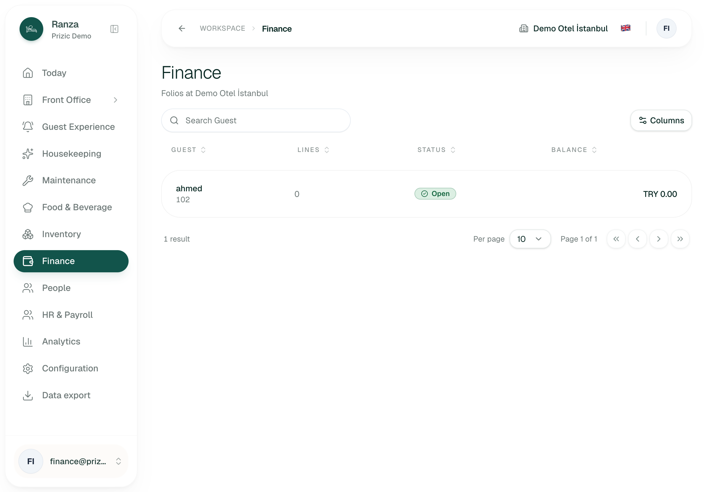
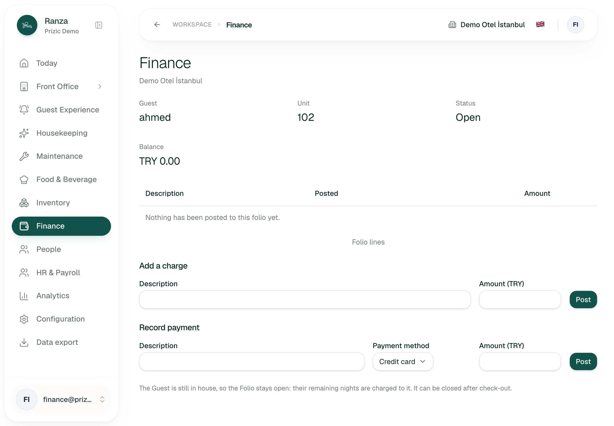
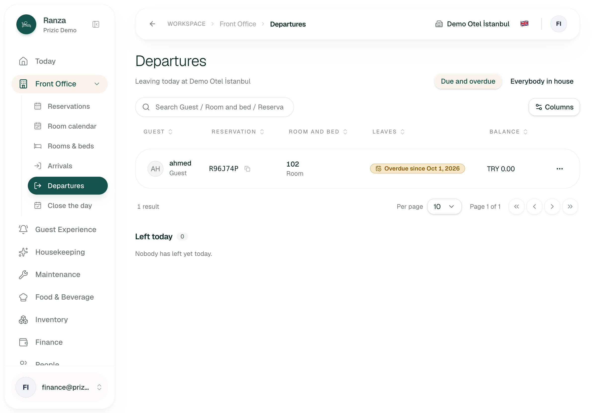
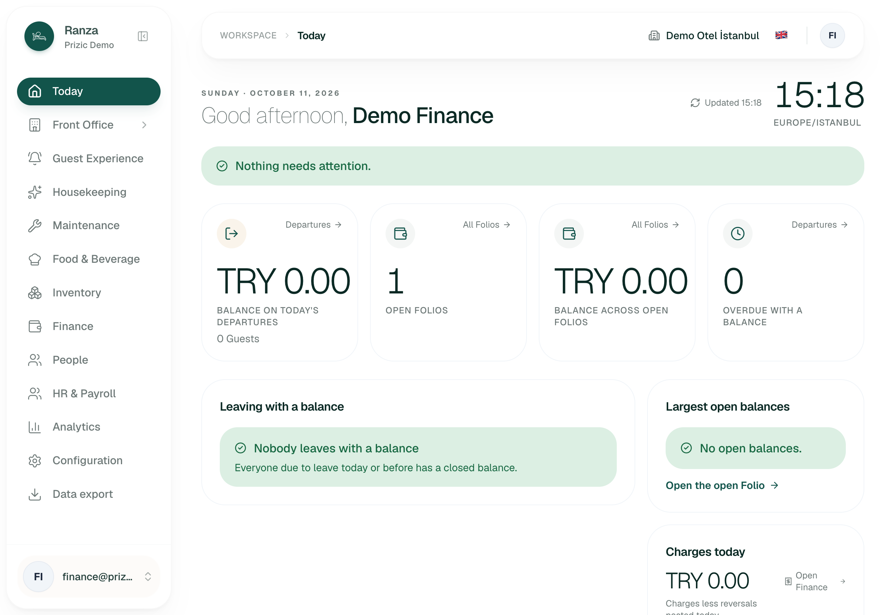
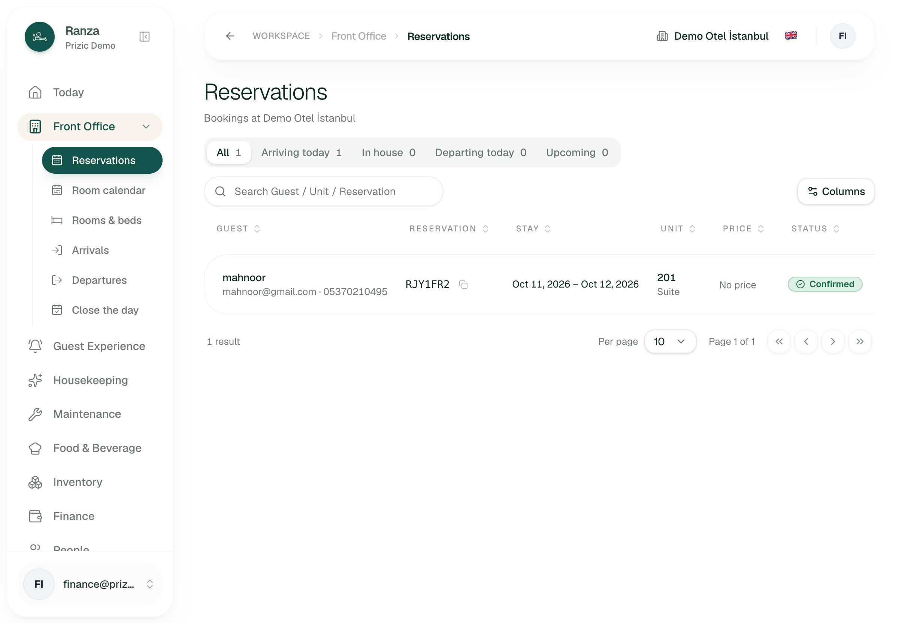
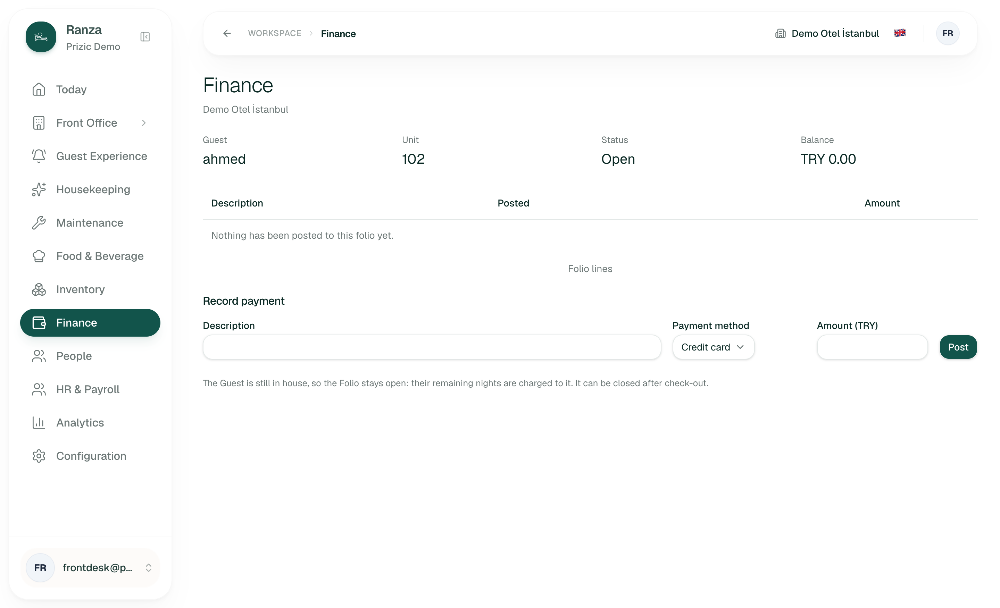
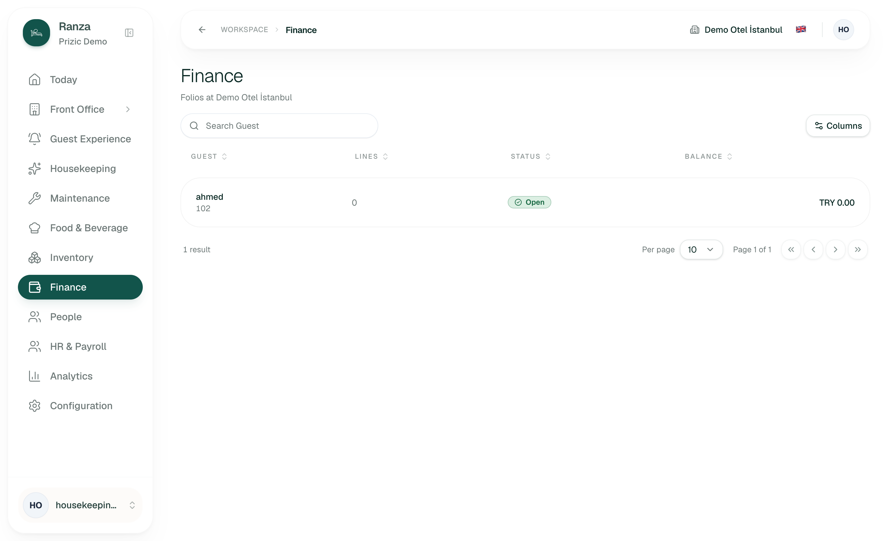
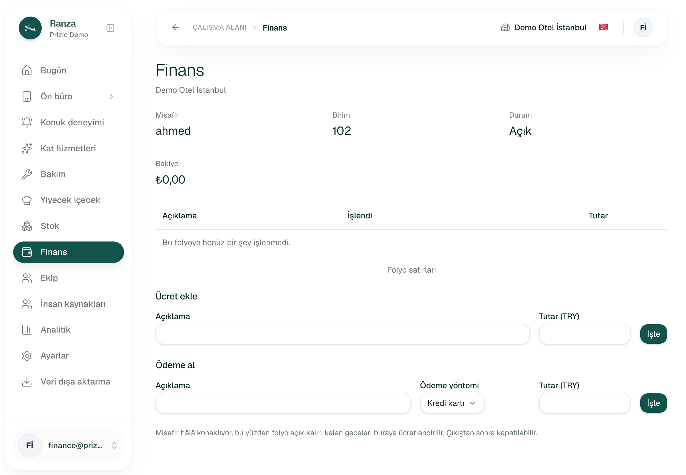
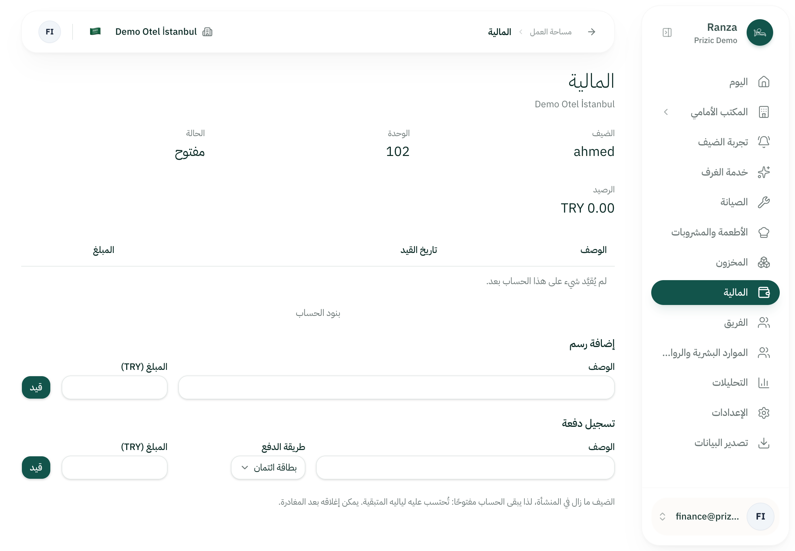
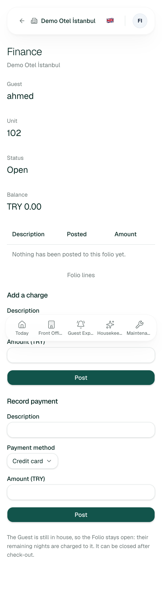
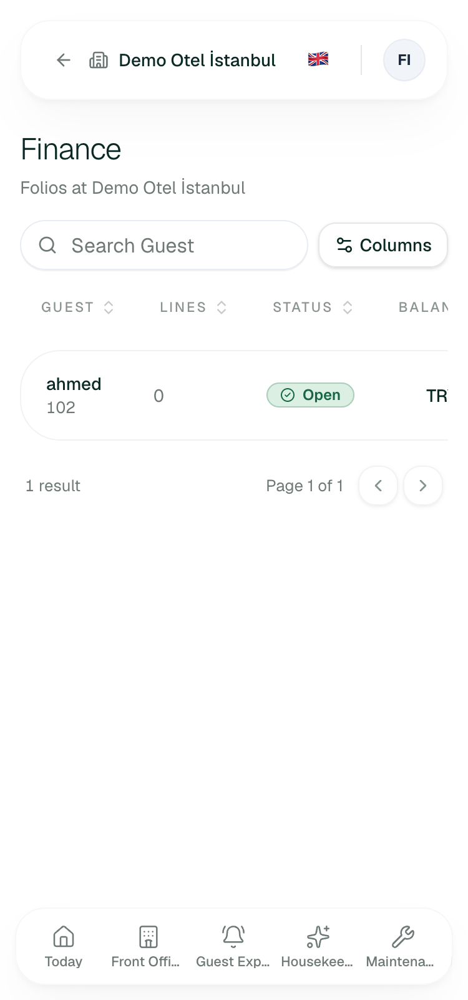
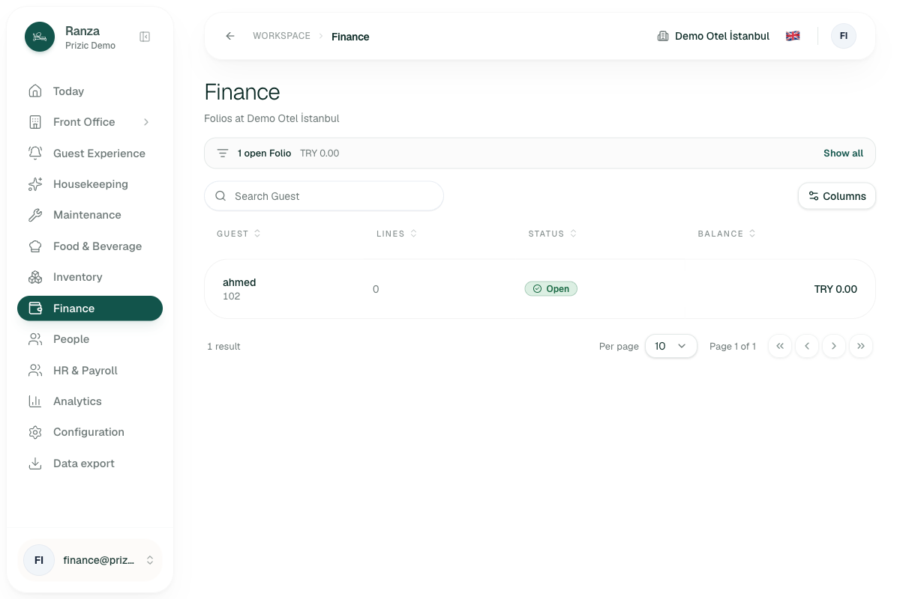
?show=open filter notice, only reachable from Today.
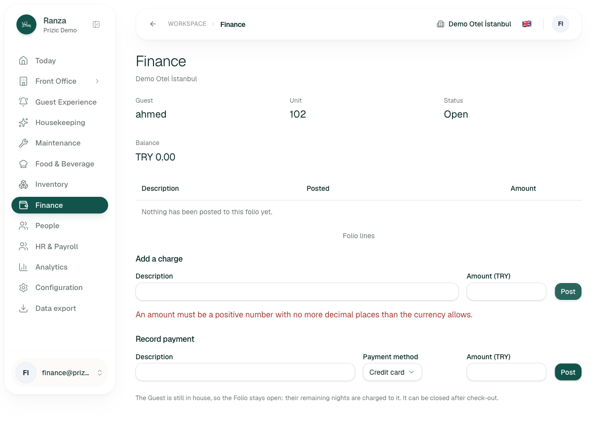
1,250.00: generic message, both fields
emptied, no line posted.